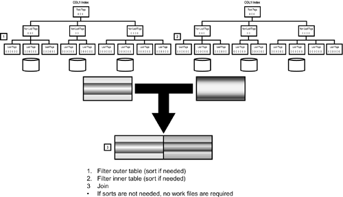

|
|
< Day Day Up > |
|
Access Path StrategiesThe optimizer can choose from a wealth of solutions when selecting the optimal access path for each SQL statement. These solutions, called strategies, range from the simple method of using a series of sequential reads to the complex strategy of using multiple indexes to combine multiple tables. This section describes the features and functionality of these strategies. ScansOf the many decisions that must be made by the optimizer, perhaps the most important decision is whether an index will be used to satisfy the query. To determine this, the optimizer must first discover whether an index exists. Remember that you can query any column of any table known to DB2. An index does not have to be defined before SQL can be written to access that column. Therefore, it is important that the optimizer provide the capability to access non-indexed data as efficiently as possible. Basically, an index will be used unless no indexes exist for the table and columns being accessed, or the optimizer determines that the query can be executed more efficiently without using an index.[*] When an index is not used, the query is satisfied by sequentially reading the tablespace pages for the table being accessed.
Why would the optimizer determine that an index should not be used? Aren't indexes designed to make querying tables more efficient? The optimizer decides that an index should not be used for one of two reasons. The first reason is when the table being accessed has only a small number of rows. Using an index to query a small table can degrade performance because additional I/O is required. For example, consider a tablespace consisting of one page. Accessing this page without the index would require a single I/O. But if you use an index, at least one additional I/O is required to read the index page. Even more I/O may be required if index root pages, index non-leaf pages, and additional index leaf pages must be accessed. The second reason for not using an index is that, for larger tables, the organization of the index could require additional I/O to satisfy the query. Factors affecting this are the full and first key cardinality of the index and the cluster ratio of the index. When an index is not used to satisfy a query, the resulting access path is called a tablespace scan (see Figure 21.2). A tablespace scan performs page-by-page processing, reading every page of a tablespace (or table). Figure 21.2. A tablespace scan.Following are the steps involved in a tablespace scan:
The actual type of tablespace scan used by DB2 depends on the type of tablespace being scanned. A simple tablespace uses a tablespace scan as shown in Figure 21.2. Every page of the tablespace being scanned is read. This is true even if multiple tables are defined to the simple tablespace (which is one of the reasons to avoid multi-table simple tablespaces). When a segmented tablespace is scanned, a tablespace scan such as the one in Figure 21.3 is invoked. A segmented tablespace scan reads pages from only those segments used for the table being accessed. This could more appropriately be termed a table scan. Figure 21.3. A segmented tablespace scan.Partitioned tablespace scans differ from simple and segmented tablespace scans because whole partitions can be skipped. DB2 can limit the partitions scanned to only those partitions that contain data relevant to the query. To do so, however, the query must specify a predicate that matches columns in the partitioning index. To understand how limited partition scans function, consider the following query in conjunction with Figure 21.4: SELECT COL1, COLx FROM T1 WHERE PART_KEY BETWEEN "H" AND "J" AND PART_KEY = "T"; Figure 21.4. Partitioned tablespace scans.Table T1 is partitioned on the PART_KEY column. Note that there are five partitions in this tablespace as depicted in Figure 21.4, but DB2 understands that only partitions 2 through 4 contain data that will satisfy this request. (Data values containing H through J are in partition 2; T is in partition 4.) Therefore, DB2 can avoid scanning the data contained in partitions 1 and 5. But DB2 can also avoid scanning partition 3 because it does not contain any data needed to satisfy the query. This is called partition skipping within a tablespace scan. If DB2 determines that partitions can be skipped during a scan, it will do so. Otherwise it will revert back to scanning all of the tablespace partitions. Limited partition scans can be combined with matching index scans when appropriate. A limited partition scan can also be used for each table accessed in a join, as long as the access is sequential. NOTE When host variables or parameter markers are used in the first column of a multi-column partitioning key, DB2 will not limit the partitions scanned. In these circumstances, DB2 doesn't know the qualified partition range at bind time. By binding with the REOPT(VARS) parameter though, you can direct DB2 to redetermine the access path at run time each time the statement is run.
Sequential PrefetchBefore discussing the various types of indexed data access, a discussion of sequential prefetch is in order. Sequential prefetch is a read-ahead mechanism invoked to prefill DB2's buffers so that data is already in memory before it is requested. When sequential prefetch is requested, DB2 can be thought of as playing the role of a psychic, predicting that the extra pages being read will need to be accessed, because of the nature of the request. The optimizer requests sequential prefetch when it determines that sequential processing is required. The sequential page processing of a tablespace scan is a good example of a process that can benefit from sequential prefetch. The optimizer requests sequential prefetch in one of three ways. The first way is static. A static request is made when the optimizer deems the request to be sequential and causes the optimizer to choose sequential prefetch at bind time. The second way is when a dynamic request invokes sequential prefetch at execution time. The third way in which sequential prefetch is requested is called sequential detection. Sequential detection dynamically invokes sequential prefetch during the middle of running a query. Sequential detection "turns on" sequential prefetch for static requests that were not thought to be sequential at bind time but resulted in sequential data access during execution. Sequential detection uses groupings of pages based on the size of the buffer pool to determine whether sequential prefetch should be requested. The size of the buffer pool is called the sequential detection indicator and is determined using the Normal Processing column of Table 21.3. The values in Table 21.3 apply to buffer pools with a 4KB page size (BP0 through BP49). Call the sequential detection indicator D. Sequential detection will request prefetch when ((D/4)+1) out of (D/2) pages are accessed sequentially within a grouping of D pages.
For example, in an environment having 800 buffers, the sequential detection indicator would be 16. If 4 out of 8 pages accessed are sequential within a 16-page grouping, sequential detection invokes prefetch. The sequential prefetch numbers are different for larger page sizes. DB2 will prefetch fewer pages because the buffer pools are larger (a 32KB pages is 8 times larger than a 4K page). Tables 21.5 through 21.7 shows the number of pages read by sequential prefetch for 8KB, 16KB, and 32KB page buffer pools. For utility processing, the number of pages read are double the amount specified in Tables 21.4, 21.5, and 21.6.
Figure 21.5 shows the potential effect of sequential prefetch on a request. A normal DB2 I/O reads one page of data at a time. By contrast, a sequential prefetch I/O can read up to 32 pages at a time, which can have a dramatic effect on performance because you skip the seek and rotational delay time. Everything else being constant, sequential prefetch I/O can enhance efficiency significantly over standard I/O. Figure 21.5. Sequential prefetch.The number of pages that can be requested in a single I/O by sequential prefetch depends on the number of pages allocated to the DB2 buffer pool, as shown in Tables 21.4 through 21.7. As you plan your environment for the optimal use of sequential prefetch, keep these final notes in mind. When sequential prefetch is requested by the optimizer, it is invoked immediately after the first single page I/O is performed. After this first I/O, DB2 kicks off two sequential prefetch I/Os—one for the pages that must be processed almost immediately and another for the second set of prefetched pages. This is done to reduce I/O wait time. Thereafter, each successive prefetch I/O is requested before all the currently prefetched pages have been processed. This scenario is shown in Figure 21.6. Figure 21.6. Sequential prefetch processing.Sequential prefetch is not the sole dominion of tablespace scans. Any process that relies on the sequential access of data pages (either index pages or tablespace pages) can benefit from sequential prefetch. Sequential prefetch can be requested by DB2 under any of the following circumstances:
Indexed AccessGenerally, the fastest way to access DB2 data is with an index. Indexes are structured in such a way as to increase the efficiency of finding a particular piece of data. However, the manner in which DB2 uses an index varies from statement to statement. DB2 uses many different internal algorithms to traverse an index structure. These algorithms are designed to elicit optimum performance in a wide variety of data access scenarios. Before DB2 will use an index to satisfy a data access request, the following criteria must be met:
This is all that is required for DB2 to consider indexed access as a possible solution for a given access path. As you progress further into the types of indexed access, you will see that more specific criteria might be required before certain types of indexed access are permitted. The first, and most simple, type of indexed access is the direct index lookup, shown in Figure 21.7. The arrows on this diagram outline the processing flow through the highlighted pages. The following sequence of steps is performed during a direct index lookup:
Figure 21.7. Direct index lookup.For DB2 to perform a direct index lookup, values must be provided for each column in the index. For example, consider an index on one of the sample tables, DSN8810.XPROJAC1 on DSN8810.PROJACT. This index consists of three columns: PROJNO, ACTNO, and ACSTDATE. All three columns must appear in the SQL statement for a direct index lookup to occur. For example, consider the following: SELECT ACSTAFF, ACENDATE FROM DSN8810.PROJACT WHERE PROJNO = '000100' AND ACTNO = 1 AND ACSTDATE = '2001-12-31'; If only one or two of these columns were specified as predicates, a direct index lookup could not occur because DB2 would not have a value for each column and could not match the full index key. Instead, an index scan could be chosen. There are two basic types of index scans: matching index scans and non-matching index scans. A matching index scan is sometimes called absolute positioning; a non-matching index scan is sometimes called relative positioning. Remember the previous discussion of tablespace scans? Index scans are similar. When you invoke an index scan, the leaf pages of the index being used to facilitate access are read sequentially. Let's examine these two types of index scans more closely. A matching index scan begins at the root page of an index and works down to a leaf page in much the same manner as a direct index lookup does. However, because the complete key of the index is unavailable, DB2 must scan the leaf pages using the values that it does have, until all matching values have been retrieved. This is shown in Figure 21.8. Figure 21.8. A matching index scan.To clarify, consider again a query of the DSN8810.PROJACT table. This time, the query is recoded without the predicate for the ACSTDATE column: SELECT ACSTAFF, ACENDATE FROM DSN8810.PROJACT WHERE PROJNO = '000100' AND ACTNO = 1; The matching index scan locates the first leaf page with the appropriate value for PROJNO and ACTNO by traversing the index starting at the root. However, there can be multiple index entries with this combination of values and different ACSTDATE values. Therefore, leaf pages are sequentially scanned until no more valid PROJNO, ACTNO, and varying ACSTDATE combinations are encountered. For a matching index scan to be requested, you must specify the high order column in the index key, which is PROJNO in the preceding example. This provides a starting point for DB2 to traverse the index structure from the root page to the appropriate leaf page. What would happen, though, if you did not specify this high order column? Suppose that you alter the sample query such that a predicate for PROJNO is not specified: SELECT ACSTAFF, ACENDATE FROM DSN8810.PROJACT WHERE ACTNO = 1 AND ACSTDATE = '2001-12-31'; In this instance, a non-matching index scan can be chosen. When a starting point cannot be determined because the first column in the key is unavailable, DB2 cannot use the index tree structure, but it can use the index leaf pages, as shown in Figure 21.9. A non-matching index scan begins with the first leaf page in the index and sequentially scans subsequent leaf pages, applying the available predicates. Figure 21.9. A non-matching index scan.DB2 uses a non-matching index scan instead of a tablespace scan for many reasons. A non-matching index scan can be more efficient than a tablespace scan, especially if the data pages that must be accessed are in clustered order. As discussed in Chapter 2, you can create clustering indexes that dictate the order in which DB2 should attempt to store data. When data is clustered by key columns, I/O can be reduced. Of course, a non-matching index scan be done on a non-clustered index, also. Compare the clustered index access shown in Figure 21.10 with the non-clustered index access in Figure 21.11. Clustered index access, as it proceeds from leaf page to leaf page, never requests a read for the same data page twice. It is evident from the figure that the same cannot be said for non-clustered index access. Figure 21.10. Clustered index access.Figure 21.11. Non-clustered index access.Furthermore, scanning an index can be more efficient than scanning the table because index rows usually are smaller than table rows so more data can be stored on an index page than a data page. Another time when a non-matching index might be chosen is to maintain data in a particular order to satisfy an ORDER BY or GROUP BY Another indexed access technique that DB2 can deploy is index screening. With index screening, a matching index scan is done on the leading columns of a composite index and then additional predicates are applied to the composite index. This technique is useful if columns of a multi-column index are not specified in the query. Consider our sample query revised once more SELECT ACSTAFF, ACENDATE FROM DSN8810.PROJACT WHERE ACTNO = 1 AND ACSTDATE > '2001-12-31'; Now, assume a composite index exists on the following—ACTNO, one or more other columns, and then ACSTDATE. The index can be screened by applying a matching index scan on ACTNO, and then a nonmatching scan for the specified ACSTDATE values greater than '2001-12-31'—but only for those rows that matched the ACTNO = 1 predicate. DB2 can avoid reading data pages completely if all the required data exists in the index. This feature is known as index-only access and is pictured in Figure 21.12. Figure 21.12. Index-only access. Consider again the sample query. This time, it is recoded so that the only columns that must be accessed are ACTNO and ACSTDATE for predicate evaluation and PROJNO, which is returned in the select list: SELECT PROJNO FROM DSN8810.PROJACT WHERE ACTNO = 1 AND ACSTDATE = '2001-12-31'; DB2 can satisfy this query by simply scanning the leaf pages of the index. It never accesses the tablespace data pages. A non-matching index-only scan is usually much faster than a tablespace scan because index entries are generally smaller than the table rows that they point to. CAUTION DB2 can use three other methods to provide indexed access for optimized SQL. The first is list prefetch. As mentioned, accessing non-clustered data with an index can be inefficient. However, if DB2 determines beforehand that the degree of clustering is such that a high number of additional page I/Os might be requested, list prefetch can be requested to sort the access requests before requesting the data page I/Os (see Figure 21.13). Figure 21.13. List prefetch.List prefetch performs the following tasks:
When the RIDs are sorted by list prefetch, the order in which they were retrieved from the index is changed. Therefore, an additional sort of the results might be required if an ORDER BY clause was specified. If an ORDER BY clause was not specified, the use of list prefetch will probably cause the results to be unordered, even though an index was used. The term skip sequential prefetch is used to categorize the type of access that list prefetch performs on data pages. When the sorted RID list is used to retrieve data pages, list prefetch effectively performs a type of sequential prefetch, whereby only the needed data pages are accessed. Those that are not needed are skipped. Multi-index access is another type of indexed access used by DB2. The idea behind multi-index access is to use more than one index for a single access path. For example, consider the DSN8810.EMP table, which has two indexes: DSN8810.XEMP1 on column EMPNO and DSN8810.XEMP2 on column WORKDEPT. Here is a query of three employees who work in a specific department:
SELECT LASTNAME, FIRSTNME, MIDINIT
FROM DSN8810.EMP
WHERE EMPNO IN ('000100', '000110', '000120')
AND WORKDEPT = 'A00';
This query specifies predicates for two columns that appear in two separate indexes. Doesn't it stand to reason that it might be more efficient to use both indexes than to estimate which of the two indexes will provide more efficient access? This is the essence of multi-index access. There are two types of multi-index access, depending on whether the predicates are tied together using AND or OR. DB2 invokes the following sequence of tasks when multi-index access is requested:
A final indexed access technique is index lookaside. Although index lookaside is technically not an access path but a technique employed by DB2, it is still appropriate to discuss it in the context of indexed access. Index lookaside optimizes the manner in which index pages can be accessed (see Figure 21.16). Of course, you have no control over whether DB2 uses index lookaside or not—it is a technique used by DB2 at the sole discretion of DB2. Figure 21.16. Index lookaside.Normally, DB2 traverses the b-tree structure of the index to locate an index entry. This can involve significant overhead as DB2 checks the root and intermediate non-leaf index pages. When using index lookaside, the path length required to find a particular leaf page can be reduced. The index lookaside technique begins only after an initial index access has taken place. Using index lookaside, DB2 checks for the RID of the desired row first on the current leaf page and next on the immediately higher non-leaf page. If unsuccessful, DB2 then reverts to a standard index lookup. By checking the current leaf page and the immediately higher non-leaf page, DB2 increases its chances of locating the desired RID sooner and adds only a minimal amount of overhead (because the ranges of values covered by the leaf and non-leaf pages are stored in cache memory upon first execution of the SELECT). Join MethodsWhen more than one DB2 table is referenced in the FROM clause of a single SQL SELECT statement, a request is being made to join tables. Based on the join criteria, a series of instructions must be carried out to combine the data from the tables. The optimizer has a series of methods to enable DB2 to join tables. Multi-table queries are broken down into several access paths. The DB2 optimizer selects two of the tables and creates an optimized access path for accomplishing that join. When that join is satisfied, the results are joined to another table. This process continues until all specified tables have been joined. When joining tables, the access path defines how each single table will be accessed and also how it will be joined with the next table. Thus, each access path chooses not only an access path strategy (for example, a tablespace scan versus indexed access) but also a join algorithm. The join algorithm, or join method, defines the basic procedure for combining the tables. DB2 has three basic methods for joining tables:
Each method operates differently from the others but achieves the same basic results—accessing data from multiple tables. However, the choice of join method has an important effect on the performance of the join. Each join method used by DB2 is engineered such that, given a set of statistics, optimum performance can be achieved. Therefore, you should understand the different join methods and the factors that cause them to be chosen. How do these join methods operate? A basic series of steps is common to each join method. In general, the first decision to be made is which table should be processed first. This table is referred to as the outer table. After this decision is made, a series of operations are performed on the outer table to prepare it for joining. Rows from that table are then combined to the second table, called the inner table. A series of operations are also performed on the inner table either before the join occurs, as the join occurs, or both. This general join procedure is depicted in Figure 21.17. Figure 21.17. Generalized join process.Although all joins are composed of similar steps, each of DB2's three join methods is strikingly dissimilar when you get beyond the generalities. The optimizer understands the advantages and disadvantages of each method and how the use of that method can affect performance. Based on the current statistics in the DB2 Catalog, the optimizer understands also which tables are best accessed as the inner table versus the outer table. Nested Loop JoinThe most common type of join method is the nested loop join, which is shown in Figure 21.18. A qualifying row is identified in the outer table, and then the inner table is scanned searching for a match. (A qualifying row is one in which the local predicates for columns in the table match.) When the inner table scan is complete, another qualifying row in the outer table is identified. The inner table is scanned for a match again, and so on. The repeated scanning of the inner table is usually accomplished with an index so as not to incur undue I/O costs. Filtering the outer table for qualifying rows also is likely to be accomplished using an index. Figure 21.18. Nested loop join. (Diagram provided courtesy of Sheryl M. Larsen, Inc.)Nested loop join is a viable access path when the whole answer set is not required. Merge Scan JoinThe second type of join method that can be used by DB2 is the merge scan join. In a merge scan join, the tables to be joined are ordered by the keys. This ordering can be the result of either a sort or indexed access (see Figure 21.19). After ensuring that both the outer and inner tables are properly sequenced, each table is read sequentially, and the join columns are matched. Neither table is read more than once during a merge scan join. Figure 21.19. Merge scan join. (Diagram provided courtesy of Sheryl M. Larsen, Inc.)Hybrid JoinThe third type of join is the hybrid join. In practice, relatively few joins turn out to be optimal as hybrid joins. The hybrid join can be thought of as a mixture of the other join methods coupled with list prefetch. Figure 21.20 shows the processing flow used by the hybrid join. Figure 21.20. Hybrid join. (Diagram provided courtesy of Sheryl M. Larsen, Inc.)The hybrid join works as follows:
The hybrid join method can provide modest performance gains for some applications that process medium-sized table joins. However, most shops have few access paths that use this type of join. NOTE Hybrid joins apply to inner joins only. Either of the other two join methods can be used for both inner and outer joins. Star JoinA final type of join provided by DB2 is the star join. The star join is a special join technique used most often by analytical and data warehousing queries where the tables being joined use a star schema. A star schema is when one large fact table is related to many separate and smaller dimension tables. This is referred to as a star schema because a data model diagram of the tables resembles a star. More details on star schema are provided in Chapter 45, "Data Warehousing with DB2." Unlike the other DB2 join methods where only two tables are joined in each step, the star join can involve three or more tables per step. The fact table is always the last table in the star join step. For a star join to operate effectively there must be a well-defined, multi-column index on the fact table for each of the dimension table keys involved in the join. Figure 21.21 depicts the basic flow of a star join. The steps involved in the star join are as follows:
Figure 21.21. Merge scan join. (Diagram provided courtesy of Sheryl M. Larsen, Inc.)The following conditions must be met before DB2 can use the star join technique:
If all of the criteria are met, the query qualifies for star join. Join Method ComparisonYou might be wondering which join method DB2 uses in a given circumstance. Although there is no foolproof method to determine which method will be used for every circumstance, there are some general guidelines:
Many shops are biased toward the nested loop join, feeling that nested loop joins almost always outperform merge scan joins. However, the performance of the merge scan join has been significantly enhanced over the life of DB2. Merge scan joins are a viable, production-quality join method. See Figure 21.22 for an estimate of the performance of the join methods as a function of the number of qualifying rows being joined. Figure 21.22. Relative join performance.In general, the guidelines are as follows:
These generalizations are purposefully vague. The exact number of qualifying rows for these cut-offs depends on many influencing factors. These factors include, but are not limited to, the following:
Query ParallelismAnother technique that can be applied by the optimizer is query parallelism. When query parallelism is invoked, DB2 activates multiple parallel tasks to access the data. A separate subtask MVS SRB is initiated for each parallel task. Both partitioned and non-partitioned tablespaces can take advantage of query parallelism. After determining the initial access path, the optimizer can be directed to perform an additional step to determine whether parallelism is appropriate. This access path formulated during this step is referred to as a parallel plan. The initial access path (pre-parallelism) is referred to as the sequential plan. When processing in parallel, the elapsed time required to access the data can decrease because more activity occurs at the same time (see Figure 21.23). Although the serial task takes fewer resources, it requires more elapsed, sequential time to complete than breaking the request up into multiple components that can be processed in parallel. Figure 21.23. Parallel tasks reduce elapsed time.The optimizer will consider parallelism when you set the DEGREE parameter to ANY. This is done at BIND time for static SQL with the DEGREE(ANY) specification and at execution time for dynamic SQL with the CURRENT DEGREE special register. The default for degree is set using the CDSSRDEF DSNZPARM parameter. Of course, as always, it is best not to rely on defaults. There are three types of query parallelism that DB2 can perform:
Query I/O parallelism enables concurrent I/O streams to be initiated for a single query, as shown in Figure 21.24. This can significantly enhance the performance of I/O bound queries. Breaking the data access for the query into concurrent I/O streams executed in parallel should reduce the overall elapsed time for the query. With query I/O parallelism, DB2 is limited to operating on a single processor for each query. Figure 21.24. Query I/O parallelism.Query CP parallelism enables multitasking of I/O streams and CPU processing within a query (see Figure 21.25). CP parallelism always uses I/O parallelism; it cannot be invoked separately. In query CP parallelism, a large query is decomposed into multiple smaller queries that can be executed concurrently with one another on multiple processors. Query CP parallelism should further reduce the elapsed time for a query. Figure 21.25. Query CP parallelism.Query Sysplex parallelism further enhances parallel operations by enabling a single query to be broken up and run across multiple DB2 members of a data-sharing group (see Figure 21.26). By allowing a single query to take advantage of the processing power of multiple DB2 subsystems, the overall elapsed time for a complex query can be significantly decreased. Figure 21.26. Query Sysplex parallelism.Although not specifically depicted in the figure, multiple DB2 subsystems in a data-sharing group can access the same physical partition when participating in a query Sysplex parallelism operation. When parallelism is invoked, an access path can be broken up into parallel groups. Each parallel group represents a series of concurrent operations with the same degree of parallelism. Degree of parallelism refers to the number of concurrent tasks used to satisfy the query. Figures 21.24 thru 21.26 show a tablespace scan accessing a tablespace with a degree of parallelism of 4. The degree of parallelism is determined by the optimizer based upon the estimated CPU and I/O cost using partition-level statistics stored in the SYSIBM.SYSCOLSTATS table. DB2 can downgrade the degree of parallelism at runtime if host variables indicate that only a portion of the data is to be accessed or if sufficient buffer pool space is not available. It is particularly important to note that DB2 might choose not to issue one parallel task per partition for partitioned tablespace access. Determination of the degree of parallelism is based upon the information in the DB2 Catalog, the number of partitions for the accessed tablespaces, system resources, and the nature of the query. Each parallel task can access the following:
Likewise, DB2 can horizontally partition data in a non-partitioned tablespace to benefit from query parallelism. Horizontal data partitioning is the process of creating range predicates for non-partitioned tablespaces to mimic partitioning. For example, horizontal data partitioning is performed to enable query parallelism to be maintained when data in a partitioned tablespace is being joined to data in a non-partitioned tablespace. DB2 will not horizontally partition a non-partitioned tablespace for single table access. By processing queries in parallel, overall elapsed time should decrease significantly, even if CPU time increases. This is usually a satisfactory trade-off, resulting in an overall performance gain because the same amount of work is accomplished using less clock time. Additionally, the CPU usage can be spread out across multiple CPUs within the same central processor complex (CPC) or even across CPCs with data sharing and query Sysplex parallelism. The best types of queries for parallel processing are I/O bound queries. The types of queries that stand to benefit most from query I/O parallelism are those that perform the following functions:
Query CP parallelism is most beneficial for scans of large partitioned tablespaces, and query Sysplex parallelism is most beneficial for complex queries that require a lot of processing power. Query Sysplex Parallelism Terms and IssuesThe DB2 subsystem that originates the SQL query is referred to as the parallelism coordinator. A member that assists in the processing of a parallel query is called a parallelism assistant. Data must be returned to the parallelism coordinator from each parallelism assistant. This is accomplished in one of two ways. When work files are required (for example, for sorting), the parallelism coordinator can access the data directly from the work files. Otherwise, the cross-system coupling facility is used to return the data to the parallelism coordinator. Restrictions on Query Parallelism UsageNote the following query parallelism restrictions:
NOTE A type-N hybrid join retrieves the inner table RIDs using a clustered index (when SORTN_JOIN="N" in the PLAN_TABLE). Parallel JoinsParallel I/O processing during a join can occur for both the outer and the inner table of a join, for only the outer table, or for only the inner table. For any join method, the outer table can be separated into logical partitions. As is true with any query executed in parallel, the optimizer determines the degree of parallelism, which can be adjusted at runtime. The logical partitions are processed using multiple parallel I/O streams applying the outer table predicates. Subsequent inner table processing is based on the type of join being performed. Nested Loop Join and ParallelismTo perform a nested loop join in parallel, the key ranges for the inner table logical partitions might need to be adjusted to match the logical partitioning of the outer table. This ensures that the number of logical partitions is equivalent for the outer and inner tables. Likewise, if the outer table was not processed using parallelism, the filtered outer table rows will need to be logically partitioned to match the inner table partitioning. In both cases, the logical partitioning is accomplished using the ESA sort assist. It is possible, however, that the outer table rows need not be sorted. In this case, the ESA sort assist will simply adjust the outer table key range to match the partitioning key range of the inner table. Additionally, if the inner table is not partitioned, it can be horizontally partitioned to enable parallelism to continue. Alternatively, the inner table can be passed to the ESA sort assist, causing sort output to be partitioned to match outer table sort output. Multiple parallel I/O streams are then used to join the filtered outer table rows to the inner table using the nested loop procedure described previously. The rows are returned in random order unless an additional sort is required for ORDER BY, GROUP BY, or DISTINCT. Merge Scan Join and ParallelismTo enable parallel merge scan joining, outer table rows are passed into the ESA sort assist, causing the sort output to be repartitioned to match the logical partitioning of the inner table. The outer table access could have been either parallel or non-parallel. A single column merge scan join is then executed using multiple parallel I/O streams. (Query I/O parallelism cannot sort all of the join columns for merge scan join.) If the inner table is not partitioned, it can be horizontally partitioned to enable parallelism to continue. The rows are returned in random order unless an additional sort is required for ORDER BY, GROUP BY, or DISTINCT. Hybrid Join and ParallelismHybrid join processing with query I/O parallelism also passes outer table rows to the ESA sort assist to logically repartition the output to match the logical partitioning of the inner table. After the outer table results are repartitioned to match the logical partitioning of the inner table, hybrid join processing is executed using parallel I/O streams. The rows are returned in page number order unless an additional sort is required for ORDER BY, GROUP BY, or DISTINCT. For parallelism to be invoked on the inner table, a highly clustered index must exist on the join columns. If such an index does not exist, the sort of the RID list and intermediate table will prevent parallel access to the inner table. Parallel Join NotesIn any case, remember that during join processing, parallel access can occur as follows:
|
|
|
< Day Day Up > |
|